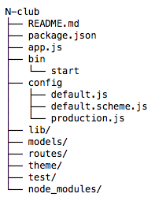

前几小节铺垫了那么多，这一小节我们将使用前几小节介绍的和其他一些 koa 的中间件开发一个简单的论坛系统。Nodeclub 是一个优秀的开源论坛系统，已在 Node.js 中文技术社区 CNode(http://cnodejs.org) 得到应用，我们仿照并借鉴 Nodeclub 从头搭建一个论坛系统。首先，构建基础项目结构如下：

其中需要说明的有：
修改 package.json，添加如下内容：
{
"name": "N-club",
"version": "0.0.1",
"description": "N-club for koa.",
"scripts": {
"start": "NODE_ENV=default DEBUG=* node --harmony app"
},
"dependencies": {
"co-cache": "0.0.5",
"co-ejs": "1.5.2",
"config-lite": "0.2.0",
"koa": "0.18.1",
"koa-bodyparser": "1.5.0",
"koa-errorhandler": "0.1.1",
"koa-flash": "0.1.0",
"koa-frouter": "0.3.2",
"koa-generic-session": "1.8.0",
"koa-generic-session-mongo": "0.1.1",
"koa-gzip": "0.1.0",
"koa-logger": "1.2.2",
"koa-router-cache": "0.3.0",
"koa-scheme": "1.4.2",
"koa-static-cache": "3.1.0",
"merge-descriptors": "1.0.0",
"mongoose": "4.0.0",
"validator": "3.35.0"
},
"engines": {
"node": "0.12.2"
}
}
保存并运行 npm install，其中：
修改 app.js，添加如下代码：
var app = require('koa')();
var logger = require('koa-logger');
var bodyparser = require('koa-bodyparser');
var staticCache = require('koa-static-cache');
var errorhandler = require('koa-errorhandler');
var session = require('koa-generic-session');
var MongoStore = require('koa-generic-session-mongo');
var flash = require('koa-flash');
var gzip = require('koa-gzip');
var scheme = require('koa-scheme');
var router = require('koa-frouter');
var routerCache = require('koa-router-cache');
var render = require('co-ejs');
var config = require('config-lite');
// 不放到 default.js 是为了避免循环依赖
var merge = require('merge-descriptors');
var core = require('./lib/core');
var renderConf = require(config.renderConf);
merge(renderConf.locals || {}, core, false);
app.keys = [renderConf.locals.$app.name];
app.use(errorhandler());
app.use(bodyparser());
app.use(staticCache(config.staticCacheConf));
app.use(logger());
app.use(session({
store: new MongoStore(config.mongodb)
}));
app.use(flash());
app.use(scheme(config.schemeConf));
app.use(routerCache(app, config.routerCacheConf));
app.use(gzip());
app.use(render(app, renderConf));
app.use(router(app, config.routerConf));
app.listen(config.port, function () {
console.log('Server listening on: ', config.port);
});
中间件的加载顺序十分重要，如上面的 errorhandler 中间件需要放到最上面，这样才能捕获下游抛出的错误。flash 中间件需要放到 session 中间件之后，因为 flash 功能是基于 session 实现的。routerCache 需要放到 router 前面，而 scheme 需要放到 routerCache 前面。 gzip 压缩中间件需要放到 routerCache 之后，这样 routerCache 缓存的就是 gzip 压缩后的内容了，大大减少了内存消耗量。
修改 default.js ，添加如下代码：
var path = require('path');
module.exports = {
port: process.env.PORT || 3000,
mongodb: {
url: 'mongodb://127.0.0.1:27017/club'
},
schemeConf: path.join(__dirname, './default.scheme'),
staticCacheConf: path.join(__dirname, '../theme/publices'),
renderConf: path.join(__dirname, '../theme/config'),
routerConf: 'routes',
routerCacheConf: {
'/': {
expire: 10 * 1000,
condition: function() {
return !this.session || !this.session.user;
}
}
}
};
我们尽量把 app.js 中使用的配置信息放到了配置文件里，其中 ./lib/core.js 是暴漏出来的核心文件，将它与模版中自定义的 locals 合并作为 co-ejs 渲染时的本地变量，模板中还自定义了一个 $app 变量，保存了模版的主题信息。我们规定模板目录下的 publices 目录用来存放静态文件，config.js 保存了 co-ejs 的配置。我们还针对未登录的用户对主页进行了缓存，并设置 10 秒生存期。